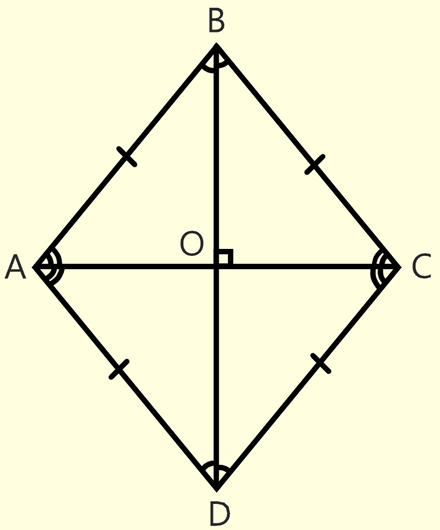

*
Ромб

# Ромб - параллелограмм у которого все стороны равны (AB = BC = CD = AD).
# Поскольку ромб является параллелограммом, ему присущи все свойства, которые есть у параллелограмма.
# Диагонали ромба пересекаются под прямым углом (<AOB = 90 градусов).
# Диагоналями ромб делится на четыре равных треугольника (AOB = BOC = COD = AOD).
# Диагонали ромба являются биссектрисами его углов (<ABO = <CBO).